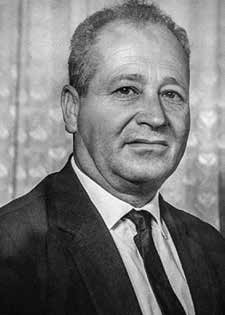

Higino
João
Pio
CIRCUNSTÂNCIAS DA MORTE
Na quarta-feira de cinzas do ano de 1969, o primeiro e então prefeito de Balneário Camboriú (SC) Higino João Pio foi detido juntamente com outros funcionários da prefeitura pela Polícia Federal e conduzido à Escola de Aprendizes de Marinheiro, na capital do estado.
A prisão, sem aparente justificativa ou sob qualquer espécie de mandado judicial, fora justificada por supostas disputas políticas locais e irregularidades administrativas, sendo a causa mais provável as suas relações próximas com o ex-presidente João Goulart.
Apesar de ter sido preso junto com funcionários da prefeitura, após interrogatório e alguns dias de apreensão, todos foram soltos, menos Higino, que permaneceu enclausurado nas dependências da Escola, mantido incomunicável, sem a possibilidade de receber visitas, inclusive de amigos e familiares. Higino foi encontrado morto nas dependências da Escola, no dia 3 de março de 1969.
De acordo com o laudo necroscópico, assinado por José Caldeira Ferreira Bastos e Leo Meyer Coutinho, e que sustenta a falsa versão do caso, sua morte teria decorrido de suicídio, provocada por uma asfixia por enforcamento. O laudo pericial de 7 de março de 1969 afirma que a situação eliminava a possibilidade de ter havido luta, disputa e violência.
Higino fora encontrado sem vida no banheiro, com as portas trancadas por dentro, enforcado com um arame que servia de varal de roupa, amarrado na torneira. Segundo o laudo, as fotos confirmavam a versão de que o então prefeito, encontrado em suspensão incompleta, havia cometido suicídio. Várias versões que constam no laudo inicial foram refutadas, uma vez que as fotos davam margem a outras interpretações, principalmente no que diz respeito à versão do suicídio. Higino, um homem aparentemente de grande porte, não estaria, por exemplo, em posição de suspensão incompleta. Pelo contrário, segundo as fotos, ele estaria com os pés completamente apoiados no chão, refutando a tese central defendida nos primeiros laudos.
Verificou-se também, em depoimentos colhidos pela CEMDP, que as motivações da prisão de Higino foram efetivamente políticas, decorrentes de disputas locais e, posteriormente, amparadas pela legislação excepcional baixada pelo Ato Institucional nº 5. Após análise dos laudos e depoimentos, foi desconstruída a montagem criada para sustentar a versão oficial de suicídio.
As encenações para justificar mortes sob tortura foram comumente utilizadas pelo regime. No entanto, falsas versões da imprensa foram anexadas ao processo de meados da década de 1990 ainda sustentavam que Higino haveria possivelmente cometido suicídio em virtude de “vergonha” das acusações que ocasionaram sua prisão.
Em julho de 2014, a Comissão Nacional da Verdade (CNV) e a Comissão Estadual da Verdade Paulo Stuart Wright, de Santa Catarina, realizaram audiência pública, em Florianópolis, sobre a morte de Higino. Na ocasião, a CNV apresentou novo laudo que buscou estabelecer um “diagnóstico diferencial” para o evento. O laudo teve o intuito de contestar a causa jurídica da morte por enforcamento a partir das perícias técnicas até então realizadas.
O laudo, assinado pelos peritos Pedro Luiz Lemos Cunha, Mauro José Oliveira Yared, Roberto Meza Niella e Saul de Castro Martins concluiu, a partir das inconsistências do caso, que não houve enforcamento, sendo o diagnóstico diferencial atestado como homicídio por estrangulamento, “consumado em local e circunstâncias que não podem precisar”. De acordo com o laudo, ainda, a vítima fora colocada no local em que foi encontrada “após a rigidez cadavérica haver se instalado”, versão que ratifica veementemente a montagem do “teatro”.
A Comissão também colheu depoimento do então médico-legista Léo Meyer Coutinho, que afirmou não se lembrar de ter ido à Escola de Aprendizes assinar o laudo de Higino. Afirmou, inclusive, ser possível que ele sequer tenha examinado o corpo, uma vez que foram utilizados dois peritos e José Caldeira Ferreira Bastos poderia ter sido o relator responsável. Coutinho relatou ainda a importância de se questionar as condições em que o laudo fora produzido na ocasião, uma vez que o médico, por si só, não possui subsídios para afirmar categoricamente se houve ou não suicídio por enforcamento.
Apesar de o laudo produzido pela CNV já refutar a versão oficial, sugeriu-se o comparecimento de José Caldeira para também prestar depoimento e auxiliar nas elucidações do caso. Higino João Pio foi o único preso político catarinense morto nas dependências de seu estado. O corpo de Higino João Pio foi sepultado sob o cortejo de milhares de pessoas no cemitério de Itajaí, em Santa Catarina.
On Ash Wednesday in 1969, the first and then mayor of Balneário Camboriú (SC) Higino João Pio was arrested together with other city hall employees by the Federal Police and taken to the Escola de Aprendizes de Marinheiro, in the state capital.
The arrest, without apparent justification or under any kind of court order, was justified by supposed local political disputes and administrative irregularities, the most likely cause being his close relations with former president João Goulart.
Despite having been arrested along with city hall employees, after interrogation and a few days of apprehension, everyone was released, except Higino, who remained cloistered on the School's premises, held incommunicado, without the possibility of receiving visits, including from friends and family. Higino was found dead on the school premises on March 3, 1969.
According to the autopsy report, signed by José Caldeira Ferreira Bastos and Leo Meyer Coutinho, and which supports the false version of the case, his death would have resulted from suicide, caused by asphyxiation by hanging. The expert report of March 7, 1969 states that the situation eliminated the possibility of there having been a fight, dispute and violence.
Higino was found lifeless in the bathroom, with the doors locked from the inside, hanging with a wire that served as a clothesline, tied to the tap. According to the report, the photos confirmed the version that the then mayor, found in incomplete suspension, had committed suicide. Several versions contained in the initial report were refuted, since the photos gave rise to other interpretations, especially with regard to the suicide version. Higino, an apparently large man, would not, for example, be in a position of incomplete suspension. On the contrary, according to the photos, he would have his feet completely flat on the ground, refuting the central thesis defended in the first reports.
It was also verified, in statements collected by CEMDP, that the motivations for Higino's arrest were effectively political, resulting from local disputes and, later, supported by the exceptional legislation enacted by Institutional Act No. 5. After analyzing the reports and statements, the montage created to support the official version of suicide was deconstructed.
Reenactments to justify deaths under torture were commonly used by the regime. However, false press versions attached to the process in the mid-1990s still maintained that Higino had possibly committed suicide due to “shame” of the accusations that led to his arrest.
In July 2014, the National Truth Commission (CNV) and the Paulo Stuart Wright State Truth Commission, from Santa Catarina, held a public hearing, in Florianópolis, on Higino's death. On that occasion, the CNV presented a new report that sought to establish a “differential diagnosis” for the event. The report was intended to contest the legal cause of death by hanging based on the technical expertise carried out until then.
The report, signed by experts Pedro Luiz Lemos Cunha, Mauro José Oliveira Yared, Roberto Meza Niella and Saul de Castro Martins, concluded, based on the inconsistencies in the case, that there was no hanging, with the differential diagnosis being confirmed as homicide by strangulation, “consummated in a place and circumstances that cannot be specified”. According to the report, the victim was placed in the place where he was found “after the cadaveric rigidity had set in”, a version that vehemently ratifies the setting up of the “theatre”.
The Commission also took testimony from the then coroner Léo Meyer Coutinho, who stated that he did not remember going to the Escola de Aprendizes to sign Higino's report. He even stated that it was possible that he had not even examined the body, since two experts were used and José Caldeira Ferreira Bastos could have been the responsible rapporteur. Coutinho also reported the importance of questioning the conditions under which the report was produced at the time, since the doctor, by himself, does not have the means to categorically state whether or not there was suicide by hanging.
Although the report produced by the CNV already refutes the official version, it was suggested that José Caldeira appear to also give a statement and assist in clarifying the case. Higino João Pio was the only Santa Catarina political prisoner killed in his state's facilities. The body of Higino João Pio was buried amid a procession of thousands of people in the Itajaí cemetery, in Santa Catarina.
El Miércoles de Ceniza de 1969, el primer y luego alcalde de Balneário Camboriú (SC), Higino João Pio, fue detenido junto con otros empleados del ayuntamiento por la Policía Federal y trasladado a la Escuela de Aprendizes de Marinheiro, en la capital del estado.
La detención, sin justificación aparente ni bajo ningún tipo de orden judicial, fue justificada por supuestas disputas políticas locales e irregularidades administrativas, siendo la causa más probable sus estrechas relaciones con el expresidente João Goulart.
A pesar de haber sido detenidos junto con empleados del ayuntamiento, tras interrogatorios y algunos días de aprehensión, todos fueron liberados, excepto Higino, que permaneció enclaustrado en las instalaciones de la Escuela, incomunicado, sin posibilidad de recibir visitas, ni siquiera de amigos y familiares. Higino fue encontrado muerto en las instalaciones del colegio el 3 de marzo de 1969.
Según el informe de la autopsia, firmado por José Caldeira Ferreira Bastos y Leo Meyer Coutinho, y que sustenta la versión falsa del caso, su muerte habría sido consecuencia de un suicidio, provocado por asfixia por ahorcamiento. El informe pericial del 7 de marzo de 1969 señala que la situación eliminaba la posibilidad de que hubiera habido pelea, disputa y violencia.
Higino fue encontrado sin vida en el baño, con las puertas cerradas por dentro, colgado de un alambre que hacía las veces de tendedero, atado al grifo. Según el informe, las fotografías confirmaron la versión de que el entonces alcalde, encontrado en suspensión incompleta, se había suicidado. Varias versiones contenidas en el informe inicial fueron desmentidas, ya que las fotografías dieron lugar a otras interpretaciones, especialmente en lo que respecta a la versión del suicidio. Higino, un hombre aparentemente corpulento, no estaría, por ejemplo, en una posición de suspensión incompleta. Por el contrario, según las fotos, tendría los pies completamente apoyados en el suelo, refutando la tesis central defendida en los primeros reportajes.
También se verificó, en declaraciones recogidas por el CEMDP, que los motivos de la detención de Higino fueron efectivamente políticos, derivados de disputas locales y, posteriormente, sustentados en la legislación excepcional promulgada por el Acto Institucional N° 5. Luego de analizar los informes y declaraciones, se deconstruyó el montaje creado para sustentar la versión oficial del suicidio.
El régimen solía utilizar recreaciones para justificar las muertes bajo tortura. Sin embargo, versiones de prensa falsas adjuntas al proceso a mediados de los años 1990 todavía sostenían que Higino posiblemente se había suicidado por “vergüenza” de las acusaciones que llevaron a su arresto.
En julio de 2014, la Comisión Nacional de la Verdad (CNV) y la Comisión Estatal de la Verdad Paulo Stuart Wright, de Santa Catarina, realizaron una audiencia pública, en Florianópolis, sobre la muerte de Higino. En aquella ocasión, la CNV presentó un nuevo informe que buscó establecer un “diagnóstico diferencial” del suceso. El informe pretendía impugnar la causa legal de la muerte por ahorcamiento con base en las pericias técnicas realizadas hasta entonces.
El informe, firmado por los peritos Pedro Luiz Lemos Cunha, Mauro José Oliveira Yared, Roberto Meza Niella y Saúl de Castro Martins, concluyó, a partir de las inconsistencias del caso, que no hubo ahorcamiento, confirmándose el diagnóstico diferencial como homicidio por estrangulamiento, “consumado en lugar y circunstancias que no pueden precisarse”. Según el informe, la víctima fue colocada en el lugar donde fue encontrada “después de que se había producido la rigidez cadavérica”, versión que ratifica con vehemencia la instalación del “teatro”.
La Comisión también tomó testimonio del entonces forense Léo Meyer Coutinho, quien afirmó que no recordaba haber ido a la Escola de Aprendizes a firmar el informe de Higino. Incluso afirmó que era posible que ni siquiera hubiera examinado el cadáver, ya que se utilizaron dos peritos y José Caldeira Ferreira Bastos podría haber sido el relator responsable. Coutinho también refirió la importancia de cuestionar las condiciones en las que se produjo el informe en su momento, ya que el médico, por sí solo, no tiene medios para afirmar categóricamente si hubo o no suicidio por ahorcamiento.
Si bien el informe elaborado por la CNV ya desmiente la versión oficial, se sugirió que José Caldeira comparezca también para rendir declaración y coadyuvar en el esclarecimiento del caso. Higino João Pio fue el único preso político de Santa Catarina asesinado en instalaciones de su estado. El cuerpo de Higino João Pio fue enterrado en medio de una procesión de miles de personas en el cementerio de Itajaí, en Santa Catarina.